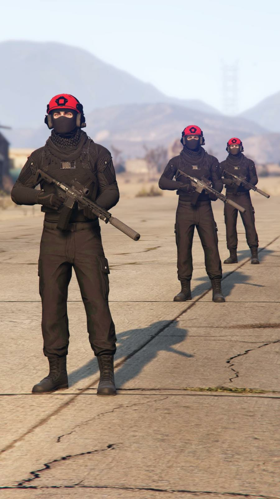
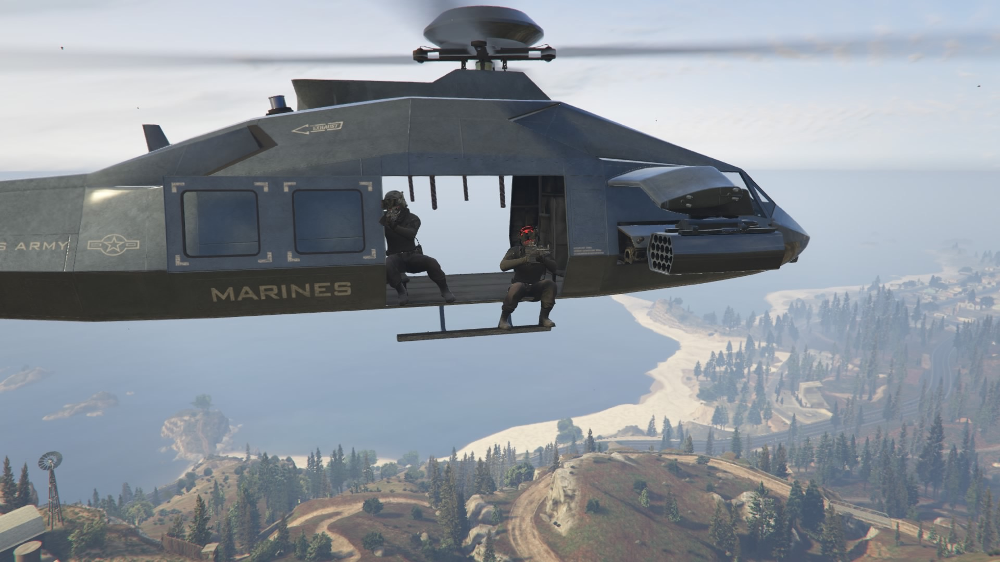
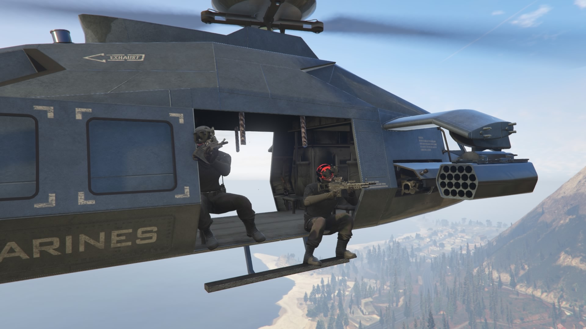
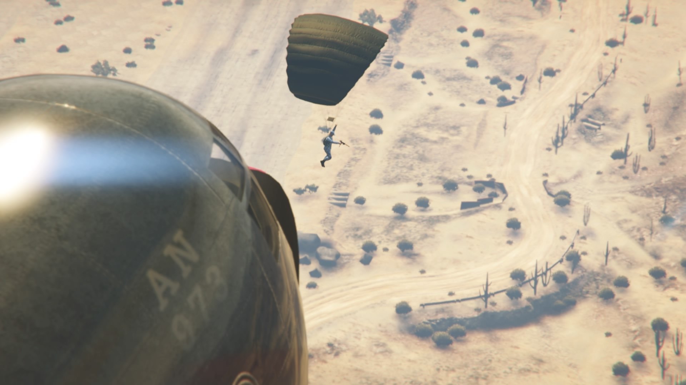
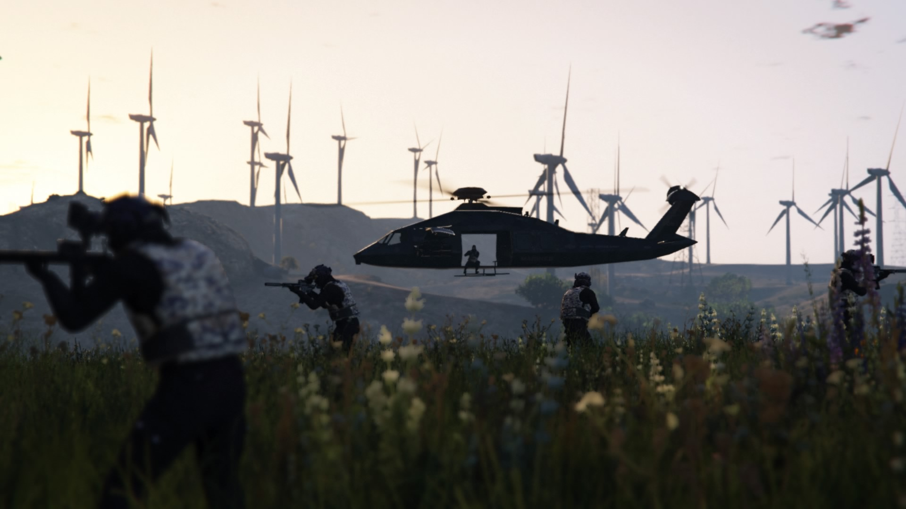
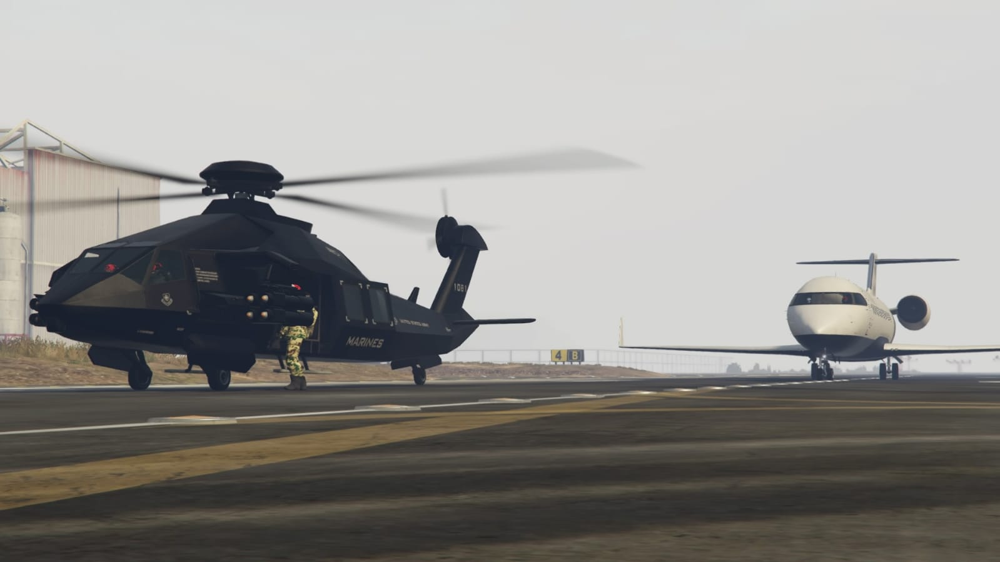
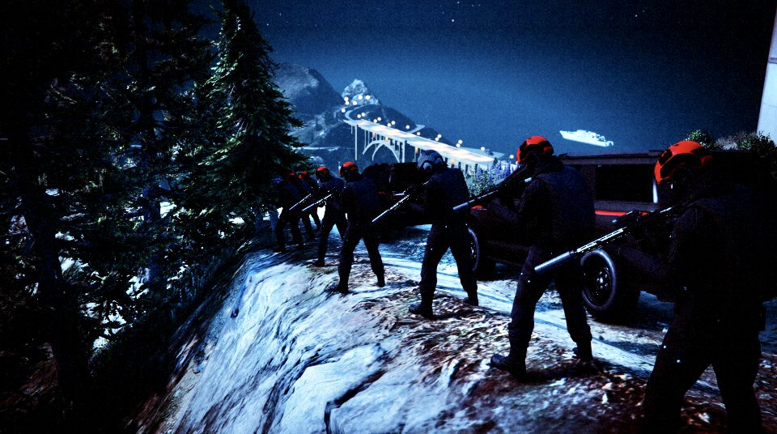
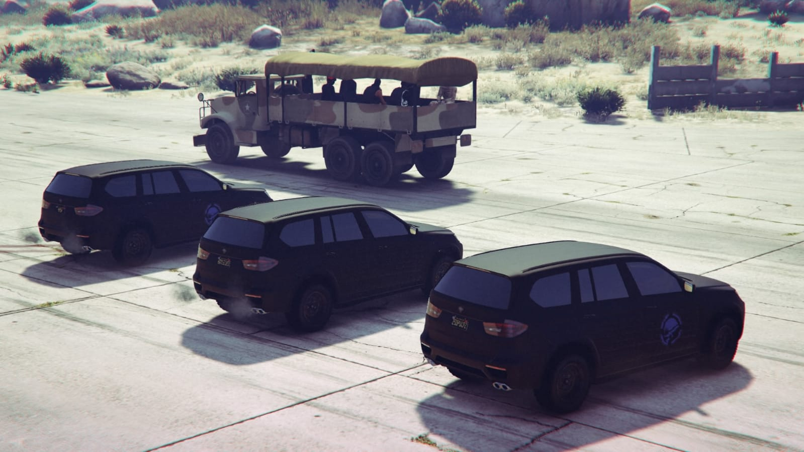

FF.EE.
COMANDOS
Elemento orientado a intervención directa, control de objetivos y acciones tácticas de alta exigencia.
Subcomponentes especializados para operaciones selectivas, infiltración, apoyo aéreo y respuesta táctica.
Este apartado reúne las secciones de COMANDOS, AFES, ASAS y TAM.

Elemento orientado a intervención directa, control de objetivos y acciones tácticas de alta exigencia.

Componente de empleo flexible para despliegue rápido, escolta, acciones de seguridad y apoyo a operaciones especiales.



Sección enfocada en asalto, inserción y extracción con apoyo aéreo, aprovechando movilidad desde helicópteros.


Sección destinada a movilidad táctica y apoyo en terreno para acompañar operaciones especiales y despliegues específicos.
